Formulas Spreadsheets are used mainly for doing calculations and one of the most powerful features of spreadsheets are calculation formulas. In this section we will see how to use them. Enter formulas To enter a formula in a cell always start typing an equal sign = and then the formula expression. Formula expressions can contain arithmetic operators: addition +, subtraction -, multiplication *, division / and powers ^ and named predefined functions like SUM, EXP, SIN, etc. This allow to use Excel as a calculator. When Excel evaluates expressions first evaluate named functions, then powers, then products and quotients, and finally additions and subtractions, but it’s possible to use parenthesis to force the evaluation of a subexpression before. Example Assuming that cells A1, B1 and C1 contain the values 6,3 and 2 respectively, the next table shows some formulas and their respective results. Formula Result A1+B1-C1 7 A1+B1*C1 12 (A1+B1)*C1 18 A1/B1-C1 0 A1/(B1-C1) 6 A1+B1^C1 15 (A1+B1)^C1 81 Example. The animation below shows how to enter the formula 4+2 in cell A1, the formula 4-2 in cell B1, the formula 4*2 in cell C1, the formula 4/2 in cell D1, the formula 4^2 in cell E1 and the formula ((4+1)*2)^3 in cell F1. 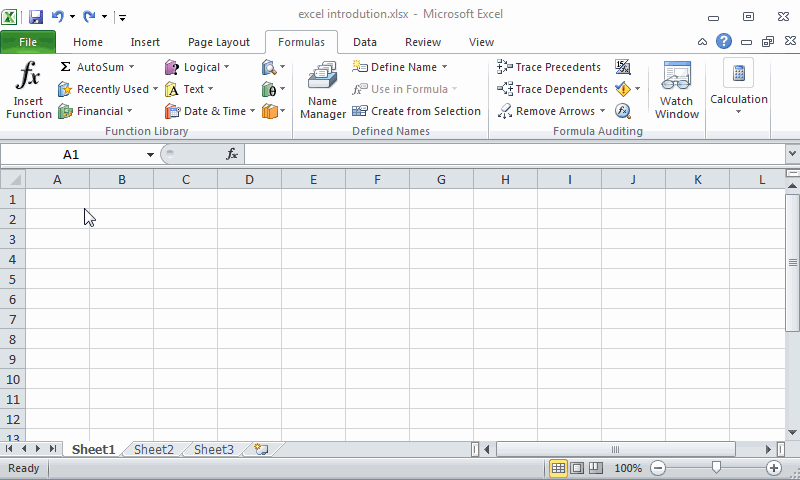 Using relative and absolutes cell references in formulas Formula expressions can content references to cells. When Excel evaluates formulas it replace every cell reference by its content before doing the calculation. Example. The animation below shows how to use the formula =A1+B1 to add up the content of cells A1 and B1 in cell C1. 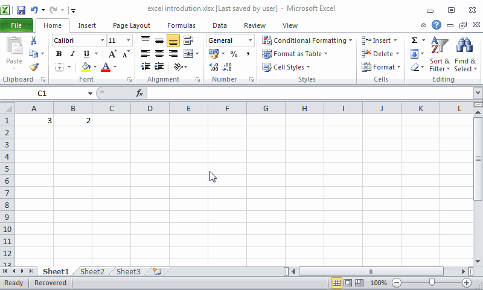 References that are formed by the name of the cell or range are known as relative references, because referenced cells change When you copy a cell with a formula and paste in another cell. In general, when you copy a formula $n$ columns to the right and $m$ rows down, the referenced cells in the formulas will be updated by the cells $n$ columns to the right and $m$ rows down, an the same if you copy the cell to the left or top. Example. The animation below shows how to copy the formula =A1+B1 in cell C1, with relative references to A1 and B1, to the cell E4, that is 2 columns to the right and 3 rows down. Observe how the formula in cell E4 is updated to =C4+D4. A common way of copying the formula of a cell to adjacent cells is clicking the bottom-right corner of the cell and dragging the cursor to the desired range of cells. Example. The animation below shows how to generate the first ten numbers of the Fibonacci sequence. Cells A1 and B1 contains the two first numbers of the serie and cell C1 the formula =A1+B1 that add the two first numbers up and gives the third number of the serie. For generating the rest of the serie it is enough to copy the formula of cell C1 to the range D1:J1. Observe how references in formulas of these cells are updated. Although relative references are very helpful in many cases, sometimes we need the references in a formula to remain fixed when copied elsewhere. In that case we need to use absolute references, that are like relative references but preceding the column name or the row name with a $ sign to fix either the row, the column or both on any cell reference. Example. The animation below shows how to calculate the IVA of a list of prices. Cells A2 to A5 contains the prices and cell F1 contains the IVA percentage. For calculating the IVA of first price we use the formula A2*F$4/100 where we fix the row of cell F4 because we wan it remain fixed when copying the formula down. Observe how the reference to cell F4 doesn’t change when copying the formula down. 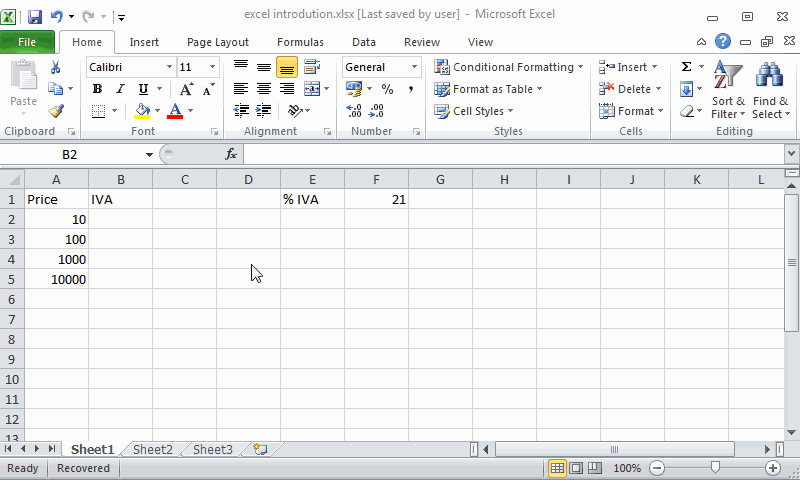 Example. The animation below shows how to calculate the multiplication table using absolute references. 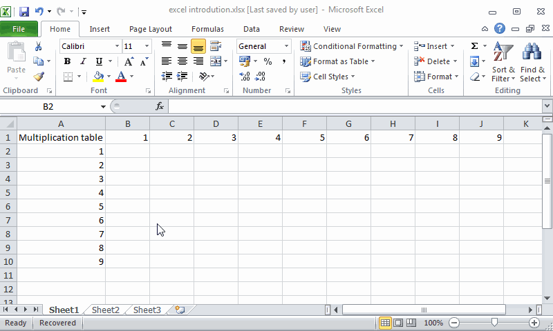 In general, if you want to fix a reference in a formula that you pretend to copy horizontally, you must precede the column name with a $ sign; and if you pretend to copy the formula vertically, you must precede the row name with a $ sign. Naming cells and ranges Cell references are somewhat abstract, and don’t really communicate anything about the data they contain. This makes formulas that involve multiple references difficult to understand. To overcome this difficulty Excel allows to give name to cells or ranges. To define a cell or range name, select or cell range and click the Define Name button of the Defined Names panel in the ribbon’s Formulas tab. In the dialog that appears give a name to the cell and click OK. Cell or range names must begin with a letter and can’t include spaces. You can also set the name of a cell or range in the name box of the input bar. After that you can use that cell o range name in any formula. Observe that references with names are always absolutes. Example. The animation below shows how to calculate the IVA of a list of prices using a cell name for the cell that contains the IVA percentage. Functions Excel has a huge library of predefined functions that performs different calculations organised by categories. There are three ways to to enter a function in a formula expression: Type it rawly if you know its name and syntax. Select it from the buttons of the Functions Library panel in the ribbon’s Formulas tab. 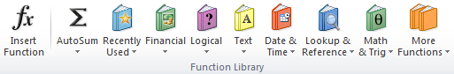 Click the Insert Function button 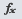 from the input bar. This will show you a dialog where you can type some key words for looking the desired function an select it. This dialog also shows help about the function and its syntax. Numeric functions Numeric functions work with numbers or cells that contains numbers. They are the most frequently used. SUM function The most common function is SUM that calculates the sum of several numbers. Its syntax is SUM(number1,number2,...) where number1, number2, etc. are the numbers or cell ranges that you want to sum. Example The animation below shows how to calculate the sum of the subject grades for every student in a course. SUMIF function The SUMIF function its similar to the SUM function but only sum numbers that satisfied a given criterion. Its syntax is SUMIF(range,criterion,sum-range) range is the cell range to check the criterion, criterion is the condition expression of the criterion, sum-range is the range with the values to sum (if this argument is not provided, the sum is calculated over the values of the range argument that meet the criterion). The expression with the condition can be a number, a cell reference, a logical expression starting with a logical operator (=,>,<,>=,<=,<>) in double quotes, or a pattern text with wildcards like the question mark ? (that matches any character) or the asterisk * (that matches any character string) in double quotes. Example The animation below shows how to calculate the sum of the grades greater than or equal to 5 for every student in a course. COUNT function The COUNT function counts the number of cells with numbers in a range. Its syntax is COUNT(value1,value2,...) where value1, value2, etc. are the values or cell ranges to count. Example The animation below shows how to calculate the number of subjects grades for every student in a course. COUNTIF function The COUNTIF function its similar to the COUNT but only counts number of cells that satisfied a given criterion. Its syntax is SUMIF(range,criterion) range is the cell range to check the criterion and criterion is the condition expression of the criterion,. The expression with the condition can be a number, a cell reference, a logical expression starting with a logical operator (=,>,<,>=,<=,<>) in double quotes, or a pattern text with wildcards like the question mark ? (that matches any character) or the asterisk * (that matches any character string) in double quotes. Example The animation below shows how to calculate the number of passed subjects (grade greater than or equal to 5). MIN function The MIN function calculates the minimum value of several numbers. Its syntax is MIN(number1,number2,...) where number1, number2, etc. are numbers or cell ranges for which you want the minimum. Example The animation below shows how to calculate the minimum grade for every student in a course. 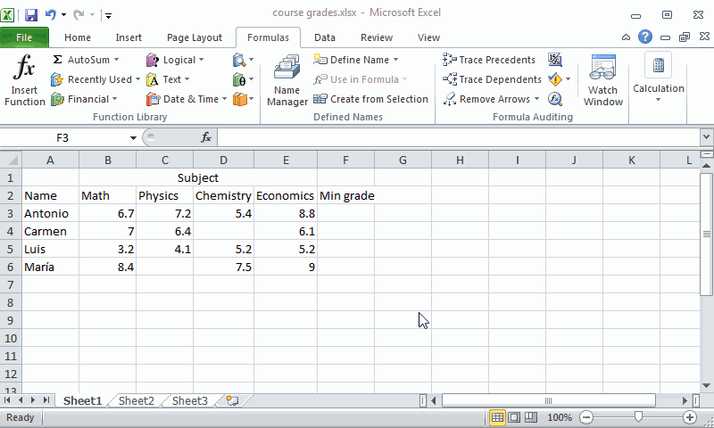 MAX function The MAX function calculates the maximum value of several numbers. Its syntax is MAX(number1,number2,...) where number1, number2, etc. are numbers or cell ranges for which you want the maximum. Example The animation below shows how to calculate the maximum grade for every student in a course. ISNUMBER function The ISNUMBER function checks if a value is number or not and returns the logical value TRUE in the first case and FALSE in the second. Its syntax is ISNUMBER(value) where value is a value or a cell reference. Example The animation below shows how to check if the cells of a range contain numbers or not. Observe that in the example cells with numbers are aligned to the right and that dates are numbers. 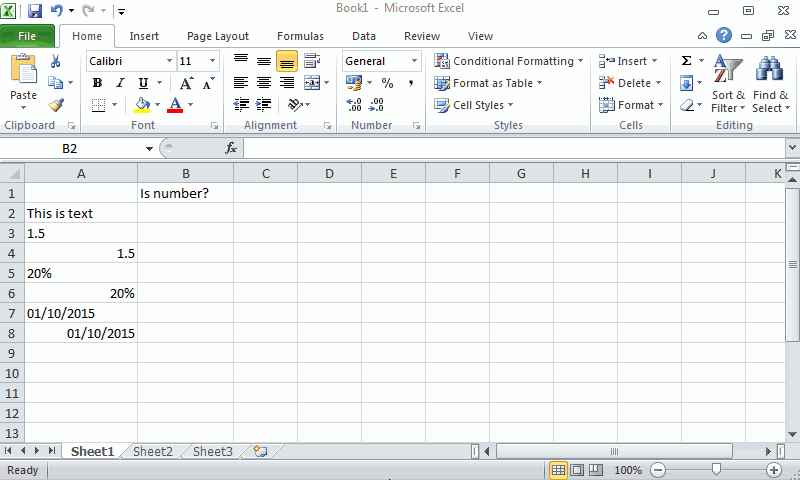 Logical functions Logical functions are very useful to take decisions. IF function The most important logical function is the IF function, that checks whether a condition is met and returns a value if is true or another value if is false. Its syntax is IF(condition,true_value,false_value), where condition is the logical condition to test, true_value is the returned value if the condition is true, and false_value is the returned value if the condition is false. In the logical condition expression you use logical operators like equal =, not equal <>, greater >, less <, greater than or equal to >=, less than or equal to <=, etc. In the true or false value you can put numbers, text in double quotes, dates, cell references or other formulas. Example The animation below shows how to use the IF function to decide if students pass or don’t pass a course depending on whether the average grade is greater than or equal to 5. AND function The AND function will return TRUE if all its arguments are true and FALSE if at least one argument is false. Its syntax is AND(contidion1,condition2,...), where condition1, condition2, etc are logical conditions. The following table, known as a truth table, shows the returned value by the AND function according to the corresponding values of its arguments. A B AND(A,B) TRUE TRUE TRUE TRUE FALSE FALSE FALSE TRUE FALSE FALSE FALSE FALSE Example. The animation below shows how to use the AND function to see which students have passed all the subjects of a course with a grade greater than or equal to 5. Observe that conditions that involve blank cells are always false. 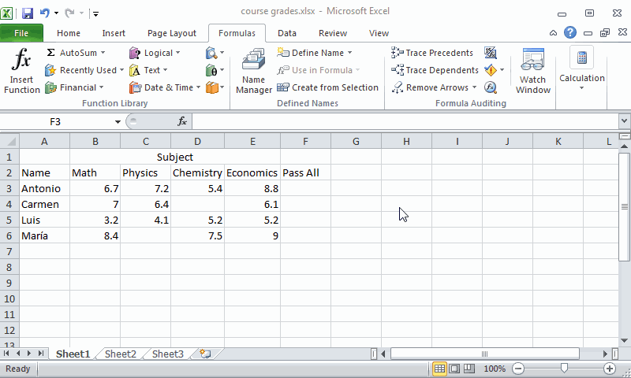 OR function The OR function will return TRUE if one or more of its arguments are true and FALSE if all its arguments are false. Its syntax is OR(contidion1,condition2,...), where condition1, condition2, etc are logical conditions. The following truth table shows the returned value by the OR function according to the corresponding values of its arguments. A B OR(A,B) TRUE TRUE TRUE TRUE FALSE TRUE FALSE TRUE TRUE FALSE FALSE FALSE Example. The animation below shows how to use the OR function to see which students have not passed some subjects of a course with a grade greater than or equal to 5. NOT function The NOT function will return TRUE if its argument is FALSE, and FALSE if its argument is TRUE. Its syntax is NOT(condition), where condition is a logical condition. The following truth table shows the returned value by the NOT function according to the corresponding values of its argument. A NOT(A) TRUE FALSE FALSE TRUE Date and time functions Date and time functions performs operations with dates and times respectively. Excel convert automatically any entry with with a date or time formats into a serial number. For dates, this serial number represents the number of days that have elapsed since the beginning of the twentieth century (so that January 1, 1900, is serial number 1; January 2, 1900, is serial number 2; and so on). For times, this serial number is a fraction that represents the number of hours, minutes, and seconds that have elapsed since midnight (so that 00:00:00 is serial number 0.00000000, 12:00:00 p.m. (noon) is serial number 0.50000000; 11:00:00 p.m. is 0.95833333; and so on). Time elapsed between two dates or times. To calculate the time elapsed between two dates or times, just enter a formula that subtracts the earlier date or time from the later date or time. In the case of dates, Excel will return the number of days between these dates. If you want to express it in year units, just divide the number of days by 365.25. In the case of times, Excel will return the number of hours between these times. If you want to express it in days unit, just change the cell format to General. Example. The animation below shows how to calculate the time elapsed between two dates and two times. 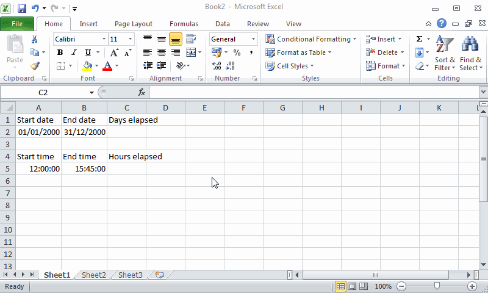 TODAY function The function TODAY returns the system date (usually the current date). Its syntax is TODAY() and this functions doesn’t have arguments. Example. The animation below shows how to calculate current age of a person using the TODAY function. DATE function The function DATE returns a date serial number for the date specified by the year, month, and day argument. Its syntax is DATE(year,month,day), where year is the year, month is the month (in number) and day is the day. Example. The animation below shows how to calculate the date given the year, moth and day. DAY, WEEKDAY, MONTH and YEAR functions The DAY function returns the day of the month of a date. Its’ syntax is DAY(date), where date is the serial number of the date. The WEEKDAY function returns the day of the week of a date. Its’ syntax is WEEKDAY(date,type), where date is the serial number of the date and type has three possible values (1: 1 equals Sunday and 7 Saturday, 2: 1 equals Monday and 7 equals Sunday; 3: 0 equals Monday and 6 equals Sunday). The MONTH function returns the number of the month of a date. Its’ syntax is MONTH(date), where date is the serial number of the date. The YEAR function returns the year of a date. Its’ syntax is YEAR(date), where date is the serial number of the date. Example. The animation below shows how to calculate the day, week day, month and year of a date. NOW function The function NOW returns the system time (usually the current time). Its syntax is NOW() and this functions doesn’t have arguments. Example. The animation below shows how to calculate current age of a person using the TODAY function. TIME function The function TIME returns a time serial number for the time specified by the hours, minutes and seconds argument. Its syntax is TIME(hours,minutes,seconds), where year is the year, month is the month (in number) and day is the day. Example. The animation below shows how to calculate the date given the year, moth and day. HOUR, MINUTE and SECOND functions The HOUR function returns the hour of a time. Its’ syntax is HOUR(time), where time is the serial number of the time. The MINUTE function returns the minute of a time. Its’ syntax is MINUTE(time), where time is the serial number of the time. The SECOND function returns the hour of a time. Its’ syntax is SECOND(time), where time is the serial number of the time. Example. The animation below shows how to calculate the hour, minute and second of a time. Text functions Text functions performs different actions on text data type. TEXT function The TEXT function converts a number into text using a format specified by the users. Its syntax is TEXT(number,format) where number is a number or a cell reference that you want to convert to text, and format is the format pattern for the text in double quotes. In that pattern you can use a 0 for numbers, . for decimal separator, d for days, m for months, y years, h for hours, m for minutes and s for seconds. Also you can use currency signs and the percentage sign %. Example The animation below shows how to convert different numbers, dates and times to text. 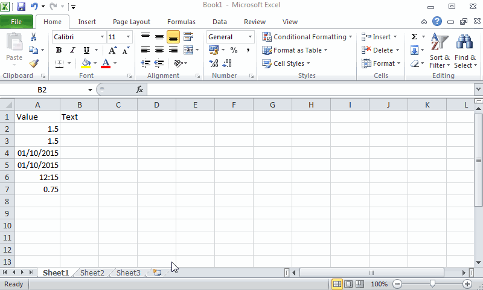 VALUE function The VALUE function converts a text string into a number. Its syntax is VALUE(text) where text is a text or a cell reference with text that represents a number. Example The animation below shows how to convert different text strings representing numbers, times and percentages to numbers. T function The T function checks if a value is text and if so, returns the text; Otherwise, the function returns an empty text string. Its syntax is T(value) where value is a value or a cell reference. Example The animation below shows how to check if the cells of a range contain text or not. Observe that in the example cells with text are aligned to the left. 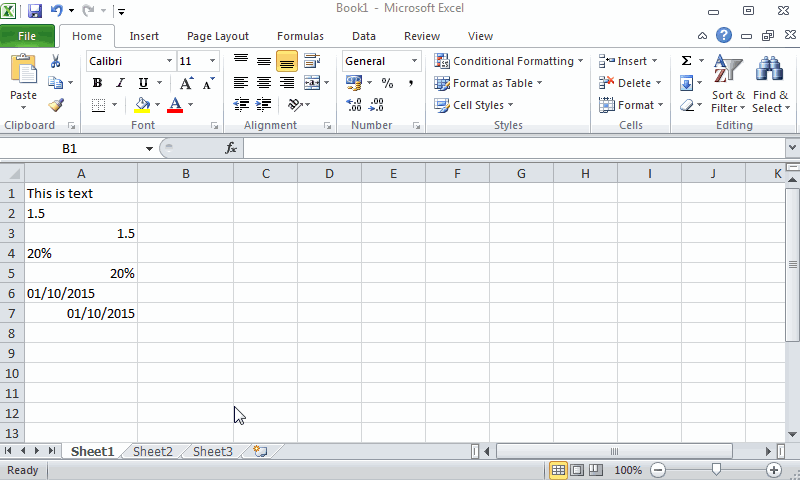 ISTEXT function The ISTEXT function checks if a value is text or not and returns the logical value TRUE in the first case and FALSE in the second. Its syntax is ISTEXT(value) where value is a value or a cell reference. Example The animation below shows how to check if the cells of a range contain text or not. Observe that in the example cells with text are aligned to the left. LEN function The LEN function counts the number of characters of a text string. Its syntax is LEN(text) where text is a text string or a cell reference with text. Example The animation below shows how to count the number of characters of several words. Observe that numbers are previously converted to text, and that blank cells have 0 characters. CONCATENATE function The CONCATENATE function joins together two or more text strings into a combined text string. Its syntax is CONCATENATE(text1,text2,...) where text1, text2, … are text strings or cell ranges with text to join. Example The animation below shows how to concatenate the first name and the last name of some persons with a blank space between them. FIND and SEARCH functions The FIND function returns the position of a specified character or sub-string within a given text string. Its syntax is FIND(find_text,within_text,[start_num]) where find_text is the sub-string to find, within_text is text where to find the sub-string, and start_num is an optional argument that specifies the position in the within_text string, from which the search should begin (if omitted the search starts from the first character). The search is case-sensitive. The SEARCH functions works the same that the FIND function except that is not case-sensitive. Example The animation below shows how to calculate the position of some text sub-strings in a text with the FIND and the SEARCH functions. SUBSTITUTE functions The SUBSTITUTE function replaces one or more instances of a specified text sub-string with another one supplied within a given text string. Its syntax is SUBSTITUTE(text, old_text, new_text, [instance_num]) where text is the text where to perform the substitution, old_text is the sub-string to replace, new_text is the new text string that it is used to replace the old_text string, and instance_num is an optional argument that specifies which occurrence of the old_text should be replaced by the new_text (if this argument is not specified all instances of old_text are replaced with the new_text). The search is case-sensitive. Example The animation below shows how to replace some sub-strings in some texts by other text strings. 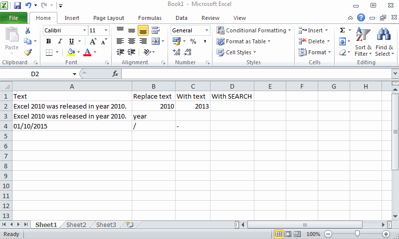 LOWER and UPPER functions The LOWER function converts all characters in a text string to lower case. Its syntax is LOWER(text) where text is the text to convert to lower case. The UPPER functions works like the LOWER function but it converts text to upper case. Example The animation below shows how to convert to lower case some text strings. 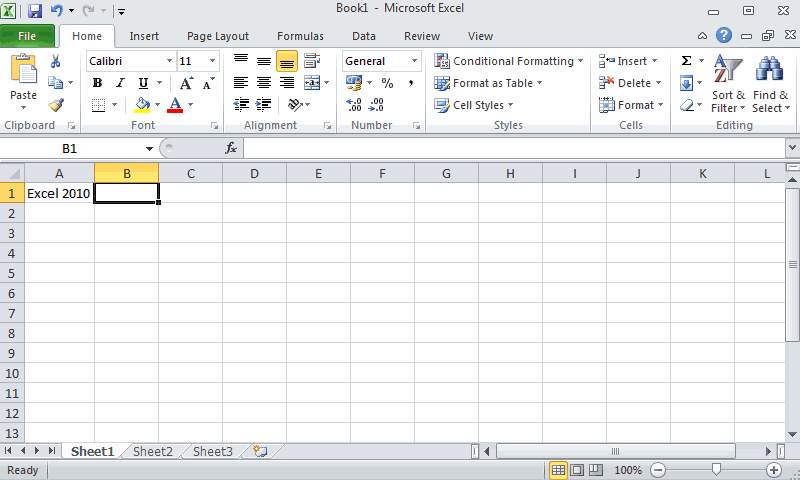 Database functions See the Database functions section. Mathematical functions Some common mathematical functions included in the function library are exponentials, logarithmic and trigonometric. SQRT function The SQRT function calculates the root square of a number. Its syntax is SQRT(number) where number is a number or a cell reference for which you want the square root. Example The animation below shows how to calculate the square root of grades in a course. 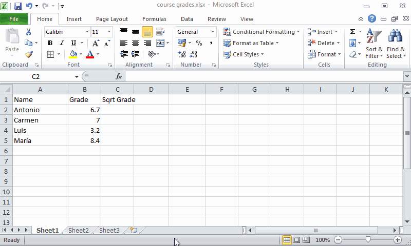 EXP function The EXP function calculates the exponential of a number. Its syntax is EXP(number) where number is a number or a cell reference for which you want the exponential. Example The animation below shows how to calculate the exponential of grades in a course. LN and LOG functions The LN function calculates the natural logarithm of a number (that is with base $e$). Its syntax is LN(number) where number is a number or a cell reference for which you want the natural logarithm. The LOG function calculates the logarithm of a number in a given base. Its syntax is LOG(number,[base]) where number is a number or a cell reference for which you want the logarithm and base is the base of the logarithm (if this argument is omitted, then base 10 is taken). Example The animation below shows how to calculate the natural logarithm and the base 10 logarithm of grades in a course. PI function The PI function returns the constant value of $\pi$. Its syntax is PI() without arguments. SIN, COS and TAN functions The SIN function calculates the sine of an angle in radians. Its syntax is SIN(angle) where angle is a number or a cell reference with the radians for which you want the sine. The COS function calculates the cosine of an angle in radians. Its syntax is COS(angle) where angle is a number or a cell reference with the radians for which you want the cosine. The TAN function calculates the tangent of an angle in radians. Its syntax is TAN(angle) where angle is a number or a cell reference with the radians for which you want the tangent. If angles are in degrees, they have to be converted to radians before with the function RADIANS(degrees) where degrees is a number or a cell reference with the degrees that you want to convert to radians. Example The animation below shows how to calculate the sine, cosine and tangent of several angles. Observe that the sine of an angle o 180 degrees is not exactly 0 because the RADIANS function does not calculate the radians corresponding to a number of degrees with total accuracy. ROUND function The ROUND function rounds a number to a specified number of digits. Its syntax is ROUND(number,digits) where number is a number or a cell reference that you want to round and digits is the number of digits to which you want to round the number. Example The animation below shows how to round the grades in a course. ABS function The ABS function calculates the absolute value of a number. Its syntax is ABS(number) where number is a number or a cell reference for which you want the absolute value. Statistical functions Excel provides functions to calculate the main descriptive statistics, probability distributions and also to make inferences about the population. For an introductory text to Statistics visit the Statistic manual page. AVERAGE function The AVERAGE function calculates the arithmetic mean of several numbers. Its syntax is AVERAGE(number1,number2,...) where number1,number2, etc. are the numbers or cell ranges for which you want the average. Example The animation below shows how to calculate the average grade for every student in a course. Observe that the average grade is well calculated even when there are blank cells in the range. AVERAGEIF function The AVERAGEIF function calculates the arithmetic mean of numbers in a cell range that meet a given criterion. Its syntax is AVERAGEIF (range,criterion,[average-range]) where range is the cell range to check the criterion, criterion is the condition expression of the criterion, average-range is the range with the values to average (if this argument is not provided, the average is calculated over the values of the range argument that meet the criterion). The expression with the condition can be a number, a cell reference, a logical expression starting with a logical operator (=,>,<,>=,<=,<>) in double quotes, or a pattern text with wildcards like the question mark ? (that matches any character) or the asterisk * (that matches any character string) in double quotes. Example The animation below shows how to calculate the average grade of students with a grade greater than or equal to 5 for every subject in a course. 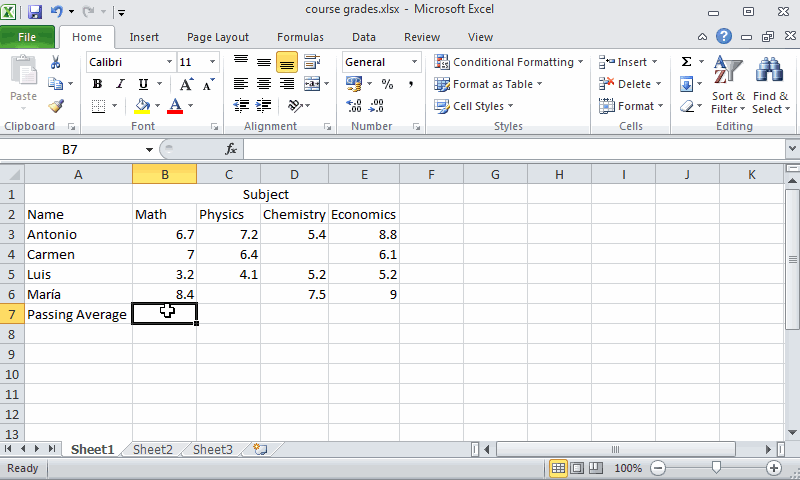 MEDIAN function The MEDIAN function calculates the median of several numbers. Its syntax is MEDIAN(number1,number2,...) where number1,number2, etc. are the numbers or cell ranges for which you want the median. Example The animation below shows how to calculate the median grade for every student in a course. Observe that the median grade is well calculated even when there are blank cells in the range. 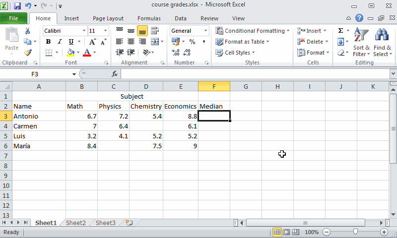 MODE function The MODE function calculates the mode of several numbers. Its syntax is MODE(number1,number2,...) where number1,number2, etc. are the numbers or cell ranges for which you want the mode. Example The animation below shows how to calculate the mode grade for every student in a course. Observe that the mode grade is not calculated when there are not repetitions of values. 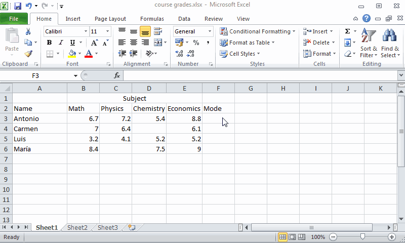 PERCENTILE.EXC function The PERCENTILE.EXC function calculates the k-th percentile of numbers in a cell range. Its syntax is PERCENTILE.EXC(range,k) where range is the cell range with the values for which you want the percentile, and k is the relative frequency (between 0 and 1) of the percentile. Example The animation below shows how to calculate the quartiles (percentiles 25, 50 and 75) of grades for every student in a course. Observe that if we use a cell reference for the k argument, putting a relative frequency in that cell (0.25 for first quartile, 0.5 for second quartile and 0.75 for third quartile) we get the correspondent percentile. 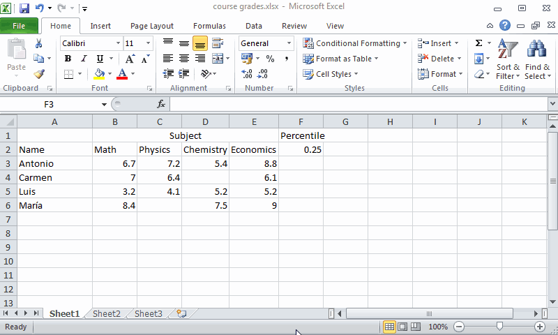 VAR.P function The VAR.P function calculates the variance of several numbers. Its syntax is VAR.P(number1,number2,...) where number1,number2, etc. are the numbers or cell ranges for which you want the variance. Example The animation below shows how to calculate the variance of grades for every student in a course. Observe that the variance is well calculated even when there are blank cells in the range. 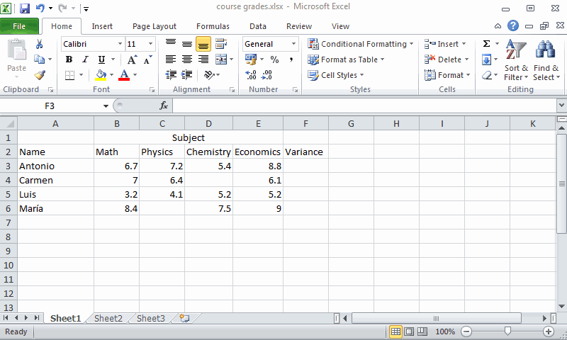 STDEV.P function The STDEV.P function calculates the standard deviation of several numbers. Its syntax is STDEV.P(number1,number2,...) where number1,number2, etc. are the numbers or cell ranges for which you want the standard deviation. Example The animation below shows how to calculate the standard deviation of grades for every student in a course. Observe that you can also calculate the standard deviation applying the square root to the variance. SKEW function The SKEW function calculates the skewness coefficient of several numbers. Its syntax is SKEW(number1,number2,...) where number1,number2, etc. are the numbers or cell ranges for which you want the skewness coefficient. Excel 2010 uses the following formula to calculate skewness: $$g_1=\frac{n}{(n-1)(n-2)}\sum \left(\frac{x_i-\bar x}{s}\right)^3,$$ where $\bar x$ is the mean and $s$ is the standard deviation. Example The animation below shows how to calculate the skewness coefficient of grades for every subject in a course. KURT function The KURT function calculates the kurtosis coefficient of several numbers. Its syntax is KURT(number1,number2,...) where number1,number2, etc. are the numbers or cell ranges for which you want the kurtosis coefficient. Excel 2010 uses the following formula to calculate kurtosis: $$g_1=\frac{n(n+1)}{(n-1)(n-2)(n-3)}\sum \left(\frac{x_i-\bar x}{s}\right)^4 - \frac{3(n-1)^2}{(n-2)(n-3)},$$ where $\bar x$ is the mean and $s$ is the standard deviation. Example The animation below shows how to calculate the kurtosis coefficient of grades for every subject in a course. 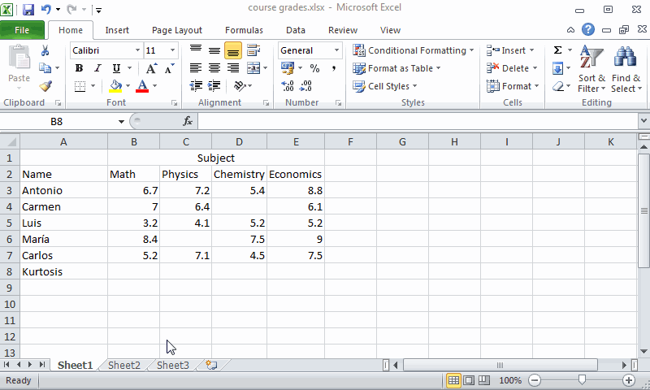 Other functions Other common functions are the following. ISBLANK function The ISBLANK function checks if a value is null or a cell is blank. Its syntax is ISBLANK(value) where value is a value or a cell reference. Example The animation below shows how to check if some cells are blank or not. Observe that cell A3 is not blank because it contains a blank space. ISERROR function The ISBLANK function checks if a value or cell is an error. Its syntax is ISERROR(value) where value is a value or a cell reference. Example The animation below shows how to check if some cells have errors. Auditing formulas When Excel can not perform an operation or when there is an error in a formula, it shows an error. Some common errors are #NAME? error. Occurs when Excel does not recognize text in a formula. Usually happens when you misspell the name of a function. #VALUE! error. Occurs when a formula has the wrong type of argument. Usually happens when you try to performs mathematical operations with cells that does not contain numbers. #DIV/0! error. Occurs when a formula tries to divide a number by 0 or an empty cell. #REF! error. Occurs when a formula refers to a cell that is not valid. Usually happens when a formula refers to a deleted cell. #NUM! error. Occurs when a formula or function contains invalid numeric values. For example when trying to calculate the square root of a negative number. #N/A error Occurs when a value is not available to a function or formula. In complex formulas it could be difficult to detect the error. Fortunately, Excel provide some tools for tracking down errors. Tracing formulas The simplest procedure to trace formulas is double click a cell with a formula. This will show the cells referenced by the formula marked in different colours. Another possibility is to trace precedents or dependents references. If you select a cell with a formula and click the Trace Precedents button of the Formula Auditing panel on the ribbon’s Formulas tab, Excel will show arrows to the cells that affect the value of the selected cell. And if click the Trace Dependents button of the Formula Auditing panel on the ribbon’s Formulas tab, Excel will show arrows to the cells that are affected by selected cell. To remove the arrow simply click the Remove Arrows button of the Formula Auditing panel on the ribbon’s Formulas tab. Example The animation below shows how to trace a formula to calculate the price of product without discount, with discount but without taxes and with discount and taxes. 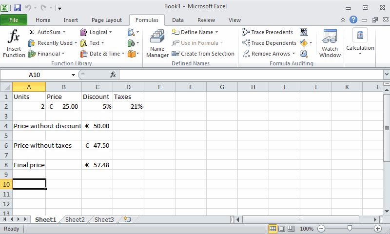 Error checking If some formula have an error, you can check where the error come from selecting the cell with the error and clicking the Error Checking button of the Formula Auditing panel on the ribbon’s Formulas tab. This will display a dialog with the formula expression, an explanation of the error and several options. If the error is in the selected cell you can click the option Show Calculation Steps to evaluate the formula (see the section Formula evaluation). But if the error is in a cell that affects the selected cell you can click the option Trace Error. This will show red arrows to cells where the error come from. Example The animation below shows how to check an error in a formula to calculate the price of product without discount, with discount but without taxes and with discount and taxes. Formula evaluation In general, you can evaluate any formula, even if it has no error, selecting the cell with the formula and clicking the Formula Evaluation button of the Formula Auditing panel on the ribbon’s Formulas tab. This will display a dialog where you can evaluate the formula step by step. Example The animation below shows how to check an error in a formula to calculate the price of product without discount, with discount but without taxes and with discount and taxes. Excel Previous Formatting and Data Printing Next Plotting Charts